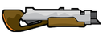

Teeworlds
Dieser Artikel wurde für die folgenden Ubuntu-Versionen getestet:
Ubuntu 16.04 Xenial Xerus
Zum Verständnis dieses Artikels sind folgende Seiten hilfreich:
Teeworlds  ist ein 2D-Shooter im Arcade Stil. Dem Spieler stehen eine Reihe von unterschiedlichen Waffen zur Verfügung, um den Gegner anzugreifen. Im Spiel können weitere Waffen, Lebensenergie und Schutzschilde aufgenommen werden. Spielziel ist es, dem Gegner Schilde oder Leben abzuziehen. Sofern diese auf Null angelangt sind, stirbt der Gegner und wird respawned. Im Spiel selber gibt es drei offizielle Spielmodi: Capture the Flag, Deathmatch und Team-Deathmatch.
ist ein 2D-Shooter im Arcade Stil. Dem Spieler stehen eine Reihe von unterschiedlichen Waffen zur Verfügung, um den Gegner anzugreifen. Im Spiel können weitere Waffen, Lebensenergie und Schutzschilde aufgenommen werden. Spielziel ist es, dem Gegner Schilde oder Leben abzuziehen. Sofern diese auf Null angelangt sind, stirbt der Gegner und wird respawned. Im Spiel selber gibt es drei offizielle Spielmodi: Capture the Flag, Deathmatch und Team-Deathmatch.
 | |
| Menü | Spielszene |
Installation¶
Paketquellen¶
Teeworlds ist in den Paketquellen verfügbar und lässt sich einfach über eine Paketverwaltung installieren [1]:
teeworlds (universe)
 mit apturl
mit apturl
Paketliste zum Kopieren:
sudo apt-get install teeworlds
sudo aptitude install teeworlds
Das Spiel ist im Menü unter "Spiele -> Teeworlds" zu finden oder kann über teeworlds gestartet werden [2].
Um selbst einen Server zu hosten muss zusätzlich Teeworlds-Server heruntergeladen werden.
teeworlds-server (universe)
mit apturl
Paketliste zum Kopieren:
sudo apt-get install teeworlds-server
sudo aptitude install teeworlds-server
Der Server ist im Gegensatz zum Spiel nicht im Menü zu finden und muss über teeworlds-server gestartet werden [2].
Manuell¶
Alle benötigten Dateien sind von den Entwicklern des Spieles schon vorgefertigt und müssen nur noch heruntergeladen werden. Dazu begibt man sich auf die Teeworlds Downloadseite  und lädt sich das entsprechende Paket herunter und entpackt [3] das Archiv nach ~/Spiele. Über
und lädt sich das entsprechende Paket herunter und entpackt [3] das Archiv nach ~/Spiele. Über teeworlds [2] kann das Spiel anschließend gestartet und - sofern gewünscht - ein Menüeintrag [4] vorgenommen werden.
Nach dem ersten Start wird der versteckte Ordner ~/.teeworlds im Homeverzeichnis angelegt. Dieser enthält unter anderem die Konfigurationsdateien für das Spiel.
{kind=link}
Modifikationen¶
Für das Spiel können eine Vielzahl von Modifikationen vorgenommen werden.
Aussehen¶
Die Optik kann leicht angepasst werden. Hier genügt es die gewünschten Dateien aus dem Installationsverzeichnis zu ersetzen. Unter den Links findet sich eine Liste mit Seiten, welche passendes Material anbieten.
| Aussehen | |
| Datei | Beschreibung |
| gui_cursor.png | Cursor |
| emoticons.png | Emoticons |
| game.png | Gameskins |
| particles.png | Particles |
Hinweis:
Im Vorfeld ist es ratsam, eine Sicherungskopie der Bilder anzufertigen.
Skin¶
Skins werden im Homeverzeichnis unter .teeworlds/skins/ abgespeichert und können beim nächsten Spielstart unter "Optionen -> Tee" ausgewählt werden.
Maps¶
Karten werden ebenfalls im Homeverzeichnis, jedoch unter .teeworlds/maps/ abgespeichert. Zusätzliche Karten stehen im Internet zur Verfügung.
| Leveleditor |
Leveleditor¶
Der Leveleditor wird über Strg + ⇧ + E gestartet. Im nächsten Schritt über "File -> New" eine neue Karte anlegen und diese über "File -> Save as" sichern. Wichtig ist, dass hier die Dateiendung .map übergeben wird. Die Karte ist anschließend ebenfalls unter ~/.teeworlds/maps/ zu finden.
Unter Teeworlds Map Editor Tutorial findet man eine genaue Beschreibung, um eigene Karten zu erstellen.
Netzwerk¶
Ǜber teeworlds-server kann der Server aus dem Installationsverzeichnis heraus gestartet [3] werden. Um genauere Parameter zu übergeben, können eigene Konfigurationsdateien erstellt werden.
Hilfreich ist die Lektüre der folgenden Links:
Im folgenden Beispiel wird die Konfigurationsdatei config_uus_dm.cfg für den Spielmodus Deathmatch im Installationsverzeichnis erstellt [5]. Für andere Spielmodi könnte man ggf. auch config_uus_tdm.cfg und config_uus_ctf.cfg mit geänderter Konfiguration anlegen.
config_uus_dm.cfg¶
sv_name ubuntuusers DM sv_gametype dm sv_warmup 10 sv_map dm1 sv_maprotation dm2 dm6 sv_max_clients 8 sv_scorelimit 20 password uus sv_register 0
Die Bedeutung der einzelnen Parameter:
| config_uus_dm.cfg | |
| Einstellungen | Beschreibung |
sv_name ubuntuusers DM | Servername |
sv_gametype dm | Spielmodus dm (Deathmatch), ctf (Capture the Flag) oder tdm (Team-Deathmatch). |
sv_warmup 10 | Zeit zum Aufwärmen zwischen den Runden |
sv_map dm1 | Zu verwendende Karte. |
sv_maprotation dm2 dm6 | Kartenrotation mit den hinterlegten Karten. |
sv_max_clients 8 | Maximale Anzahl von Clients, welche sich zeitgleich mit dem Server verbinden können |
sv_scorelimit 20 | Punktelimit des Spiels - 0 deaktiviert dies. |
password uus | Passwortschutz |
sv_register 0 | Anmeldung am Hauptserver mittels 1 - 0 verhindert dies. |
Um den Server mit der gewünschten Konfiguration zu starten übergibt man den Startbefehl [2] mit der soeben erstellten Datei:
teeworlds-server "exec config_uus_dm.cfg"
Alternativ kann man auch den Pfad zu der Datei angeben:
teeworlds-server "exec /Pfad/zur/config_uus_dm.cfg"
Waffen¶
Die folgenden Waffen stehen innerhalb des Spiels zur Verfügung:
| Waffen | |
| Waffe | Beschreibung |
| Granatwerfer - Abschuss einer Granate, welche großen Schaden anrichtet. Zusätzlich kann mit ihm ein Rocket-Jump gemacht werden. | |
| Hammer - Standardwaffe, welche großen Schaden im Nahbereich bewirkt. | |
| Katana - seltene Waffe mit großer Schadenswirkung. | |
| Laserkanone - präziser Umgang erforderlich. Der Strahl reflektiert an den Wänden und die Schadenswirkung ist mittel. | |
| Pistole - Standardwaffe mit unendlicher Munition aber geringem Schaden. | |
|  | Schrotflinte - geringe Reichweite und Wirkung abhängig von Entfernung. |
Tastenkürzel¶
| Tastenkürzel | |
| Taste(n) | Funktion |
1 -
5 /  (Mausrad) (Mausrad) | Waffe wechseln (Hammer, Pistole ...) |
| A / D | Links / Rechts laufen. |
| Springen. | |
 | Waffe anwenden. |
 | Haken mit Kette abschießen an der man hangelt. |
| Tab ⇆ | Scoreboard anzeigen. |
| T | Chat öffnen. |
| Y | Teamchat starten. |
| ⇧ | Emoticons anzeigen. |
| F1 | Konsole öffnen. |
| F2 | Öffnet die Remote Console. |
| F3 / F4 | Abstimmung: Ja / Nein |
| F10 | Bildschirmfoto erstellen - diese werden im Homeverzeichnis unter ~/.teeworlds/screenshots/ abgelegt. |
| Strg + ⇧ + E | Leveleditor |

Infobox¶
| Teeworlds | |
| Genre: | Shoot ’em up |
| Sprache: |  |
| Veröffentlichung: | 2007+ |
| Entwickler: | Teeworlds-Team |
| minimale Systemvoraussetzungen: | 800 MHz Prozessor / 256 MB Arbeitsspeicher / 7 MB Festplattenspeicher / 3D-Grafikkarte / Internetverbindung |
| Medien: | Download |
| Strichcode / EAN / GTIN: | - |
| Läuft mit: | nativ |
- Erstellt mit Inyoka
-
 2004 – 2017 ubuntuusers.de • Einige Rechte vorbehalten
2004 – 2017 ubuntuusers.de • Einige Rechte vorbehalten
Lizenz • Kontakt • Datenschutz • Impressum • Serverstatus -
Serverhousing gespendet von